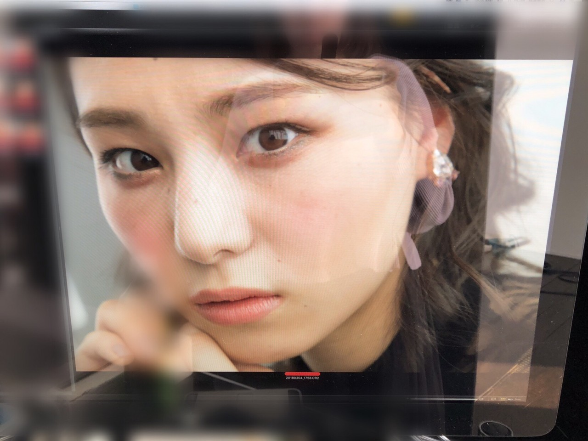
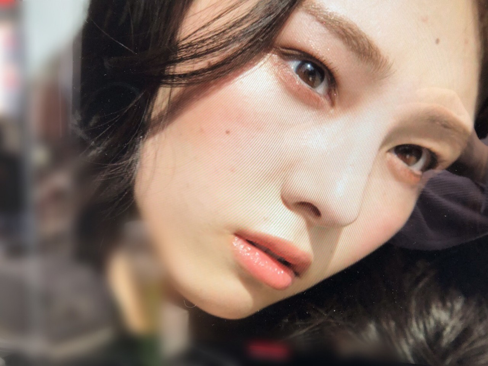
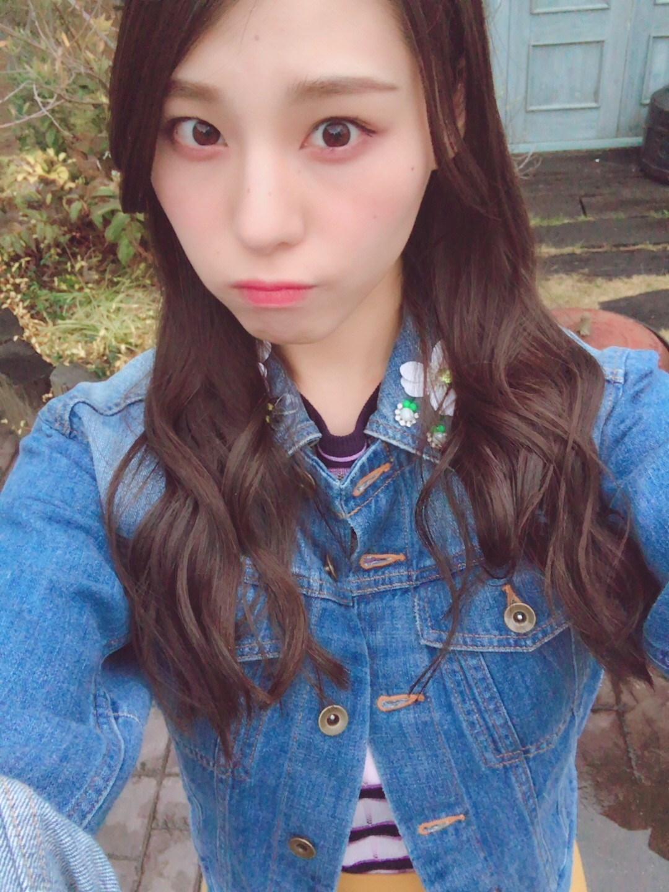
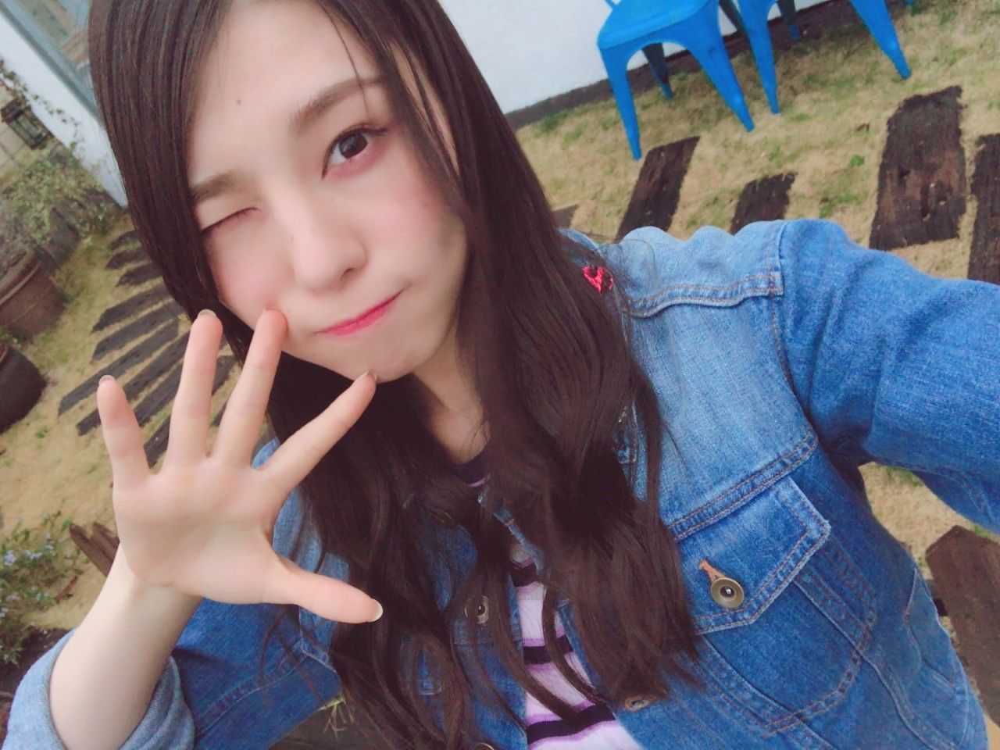

| 2018/05 02 Wed | かくごしとく_(．．*)vol.231 |
みなさんこんにちは
相楽伊織です




MAQUIA発売中です♡
今月号は今までで
1番大きく載ってます！！
見開きだしアップで本当に嬉しい(><)！
もっと沢山呼んでもらえるように
ページも沢山出られるように頑張る(><)！
おばあちゃんに報告したら
すぐに本屋さんに買いに行ったみたいで
｢いーちやんは可愛いね～｣って
言ってくれました(^^)笑
おばあちゃんは
どうしても｢や｣を小さい｢ゃ｣に出来ないみたい
でも報告するといつも喜んでくれるから
嬉しいんだー(^^)
歌詞カードのソロの写真！
私は｢襟｣がシンクロY(^^)Y
本当に髪の毛伸びるの早い
この時より今の方が見るからに長い
どれくらいの長さにしようか
今悩んでるのー(´･ω･`)
ショートにはしないんだけど。
まよいちゅう～
大阪握手会終わりは
優里さんの代打でTHE魂に出させて頂きました！
握手会終わりで
スタートに間に合わなくて
ラジオの代打初めてだし
生放送だしそもそもラジオあまりやらないから
緊張したー(><)！
ちーちゃんがいて本当によかった。。
だんばらさんもすごい面白くて
また行きたいなって思いますーヽ(*^^*)ノ
聞いて下さった皆さん
ありがとうございましたm(__)m
また機会があればよろしくお願いします！
あ、この前のSRは
まあやとやりました！
自由な感じでお話してるから
退屈じゃないかなーって不安になる時もある(^^;
でも普段1対1で話してる姿なんて
なかなか見ないから
それもいいのかなーと思ってます！笑
またSHOWROOM配信するから
見に来てねー♪
全握個握の写真は次載せます(^-^)/
i o r i .

コメント(275)
2018/05/02 21:51